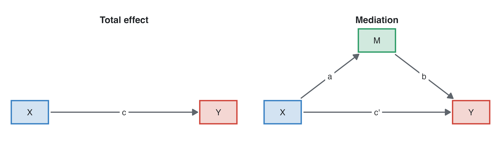
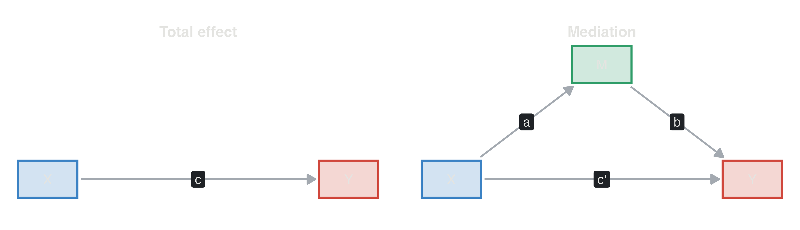
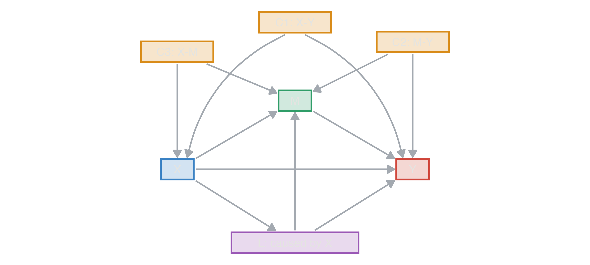
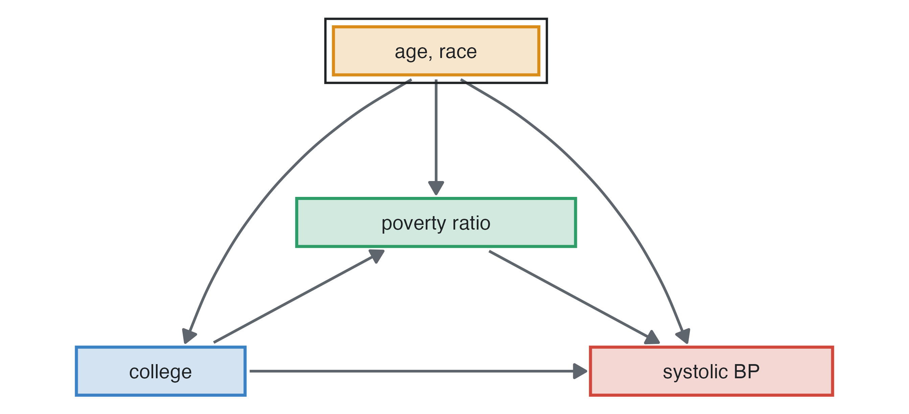
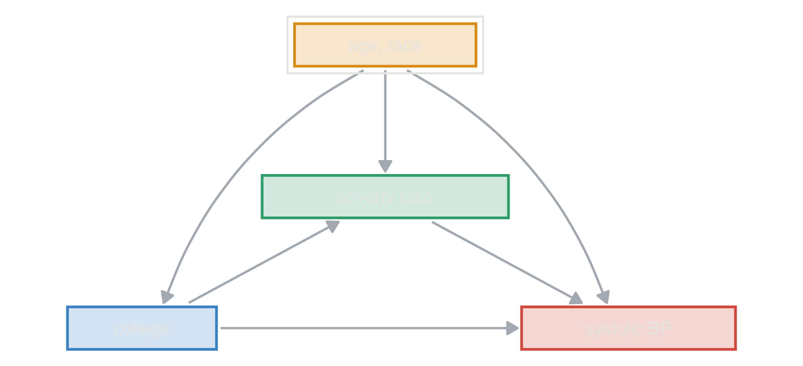

Epidemiology guide, part 5
An exposure often acts through intermediate variables: obesity raises blood pressure, which raises the risk of a heart attack. Mediation analysis splits the total effect of an exposure into the part that goes through a mediator (the indirect effect) and the rest (the direct effect). The aim is to explain how an exposure works, or what share of its effect an intervention on the mediator could remove. It needs more assumptions than estimating a total effect, and those assumptions are where most mediation analyses fail (VanderWeele 2016; Hernán and Robins 2020).


| effect | question | definition |
|---|---|---|
| Total effect (TE) | what if X changed? | compares Y with X and without X, M following X |
| Controlled direct effect (CDE) | what if X changed and M were fixed at a value m for everyone? | depends on m when X and M interact |
| Natural direct effect (NDE) | what if X changed but M stayed as it would be without X? | the effect not through M |
| Natural indirect effect (NIE) | what if X stayed, but M changed as X would change it? | the effect through M |
On the difference scale TE = NDE + NIE, and the proportion mediated is NIE / TE. In linear models without an X × M interaction the classic approach of Baron and Kenny (Baron and Kenny 1986) gives them directly:
The two agree for linear models of continuous outcomes. For binary and survival outcomes (logistic, Cox) they do not, because odds and hazard ratios are non-collapsible: c − c′ then mixes mediation with the change of scale (Measures and models). With an X × M interaction, or with non-linear models, natural effects need the counterfactual definitions and software that implements them (Imai et al. 2010).

Natural direct and indirect effects can be estimated only if there is no unmeasured confounding of (VanderWeele 2016):
Randomising X removes C1 and C3, not C2. The adjustment sets of the two regressions differ: the model for M needs the X–M confounders, and the model for Y needs the X–Y and M–Y confounders.
Formoterol vs salbutamol in asthma, children aged 7 to 14. Peak expiratory flow (PEF) rises with age, but age has no effect of its own in the scenario: older children are taller, and height determines lung size. Age acts entirely through height.
| simulated population (30,000) | a trial of 300: estimate (bootstrap 95% CI) | |
|---|---|---|
| total effect of age (c) | 13.03 | 11.5 (8.0 to 15.1) |
| age on height (a, cm per year) | 4.36 | 4.3 (3.9 to 4.7) |
| height on PEF (b, L/min per cm) | 3.02 | 3.44 (2.52 to 4.41) |
| direct effect of age (c’) | -0.15 | -3.3 (-8.3 to 1.8) |
| indirect effect (a × b) | 13.18 | 14.8 (11.0 to 19.0) |
Each year of age adds 13 L/min of PEF. Given height, age adds nothing (-0.1): the indirect effect a × b = 13.2 is the whole effect. In a trial of 300 children the indirect effect is estimated with a bootstrap confidence interval, because a product of two estimates is not normally distributed.
In jamovi: open the trial’s data and run jAMM ▸ GLM Mediation Model with pef as dependent variable, height as mediator, age as covariate (and drug as factor), bootstrap confidence intervals; or medmod ▸ Mediation for a single mediator without covariates. Both fit linear models (with lavaan), so they need a continuous mediator and outcome.
Blood pressure in US adults, cross-sectional. People with a college education have lower systolic pressure, partly because they are less poor (the poverty ratio enters the outcome model) and partly for other reasons. Age and race affect education, poverty and blood pressure, so they confound both steps.


| adjusted for age and race | not adjusted | |
|---|---|---|
| total | -3.16 mmHg | -5.26 mmHg |
| direct | -2.50 mmHg | -4.30 mmHg |
| indirect (through poverty) | -0.66 mmHg | -0.95 mmHg |
| proportion mediated | 21% | 18% |
Most of the effect of college education here is direct; poverty carries a small part. Without adjusting for age and race the total effect is confounded: older people have less education and higher pressure.
Coronary heart disease incidence: men have a higher hazard than women partly because they have lower HDL. jamovi’s mediation modules need a continuous outcome, so for a Cox model the usual approach is the difference method: the hazard ratio of sex before and after adding HDL, with the confounders of HDL and CHD (age, BMI) in both models.
| Cox model | HR of men, simulated cohort of 60,000 | studysim’s truth |
|---|---|---|
| sex, age, BMI (total effect) | 1.77 | 1.76 |
| sex, age, BMI, HDL (direct effect) | 1.56 | 1.60 |
On the log scale, (log 1.77 − log 1.56) / log 1.77 = 22% of the effect of sex goes through HDL. The approximation is reasonable here because coronary events are uncommon. With a common outcome the hazard ratio changes when a covariate is added even if it mediates nothing, so this share is not a mediated proportion. For binary or survival outcomes, estimate natural effects with the R package mediation (in jamovi, through the Rj editor) or with weighting methods.
| situation | jamovi | R |
|---|---|---|
| continuous M and Y, one mediator | medmod Mediation | lm, lavaan |
| several mediators, covariates, moderated mediation | jAMM GLM Mediation Model | lavaan |
| binary or survival Y, X × M interaction | (Rj) | mediation, CMAverse |